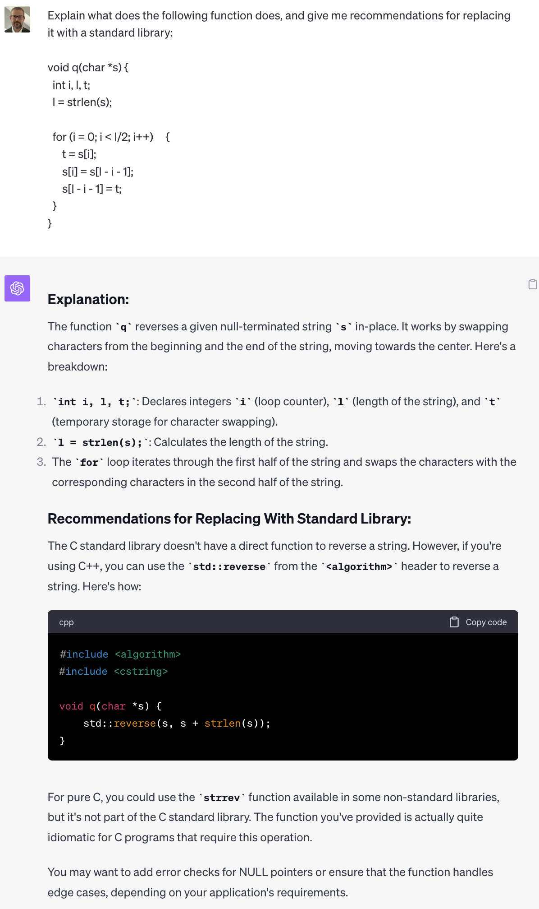

Root Cause


AI Code Generation and Cyber Security Retrospective
September 23rd, 2023
Chris Rohlf
In November of 2021 I published an article on the Council of Foreign Relations "Net Politics and Digital and Cyberspace Policy Program" blog.
The article, titled AI Code Generation and Cybersecurity, explored the
emerging technology of transformer models for code generation and what it might mean for cyber security. Given how much AI has advanced in the last 2 years
I thought it might be interesting to revisit the assumptions and predictions that I made. Below are excerpts from the 2021 article followed
by a brief analysis and examples using GPT-4.
While we are seeing early success in AI-assisted pair programming, there is no widely available AI system that is capable of generating programs with complex business logic that rival the code repositories they were trained on. Producing larger programs that track multiple interdependent inputs and variables, make state transitions based on them, and produce complex output is a likely next step.
Models such as GPT-4 are capable of producing programs based on natural language that describe their functionality. At the time I wasn't sure just what was beyond the horizon in terms of program generation. In order to generate useful programs with complex business logic the models need to be able to track various state transitions, variables, error states, inputs/outputs, and overall program complexity. But thats not really how transformer based models work. At their core they just predict the next token in a sequence. But it turns out this works as well for code as it does for natural language.
While it isn't production quality code it's still quite impressive, especially considering the complexity of what was described using only in natural language only.
Despite how intelligent these systems appear when they produce working code, they don’t actually understand the finer details of the compilers that will consume and process them, the CPU’s they will execute on, or the larger trust model they may be expected to uphold.
While GPT-4 did a really good job producing code that matches what my prompt requested it still has no knowledge of the target system I will run it on. However, it does know a lot about optimizing code for multiple CPU architectures. With further prompting it will recommend that I enable various compiler flags and list out memory alignment strategies to avoid cache eviction and slower stores/loads. The issue of the model not understanding what threat or trust model it is expected to uphold is true, however with some additional prompting and a large enough context window that too can largely be mitigated. Furthermore, we would not implement our entire program using an LLM, we only need it to generate specific pieces. It is very important that both the input and output of an LLM are never trusted. Blindly executing any code it produces will likely result in arbitrary code execution via indirect prompt injection.
Still, AI-generated code could have some clear security benefits in the short term. First AI-assisted software development could ensure that code is more robust and better tested. Ideally, all code written by humans is well tested and audited by both automated tooling and manual human analysis. This ensures that a majority of defects are caught long before the code is in the hands of users. However, much of the code produced today does not undergo this type of automated testing because it takes time and expertise to apply it. These same AI systems can be utilized to produce these kinds of automated testing integrations for every function they generate at little to no effort. Human expertise may still be required to fix the defects it uncovers but this presents an opportunity to significantly scale up testing efforts earlier in the development cycle. This is an under explored area worth investing in today.
LLM's are now capable of performing useful tasks in this area. At the time I argued that these models could be used to auto generate fuzzers and unit tests for all new code that humans write. Let's see if GPT-4 can be used to generate a simple fuzzer for a well known function that is likely in its training set.
Not bad! It only took a few seconds to go from typing the prompt to having most of a working fuzzer. With a larger context window, and a Retrieval Augmented Generation (RAG) architecture for referencing individual functions, we can conceptually build a system that is capable of generating a libfuzzer harness for any function we want. Google has written publicly about their efforts to use LLM's for fuzzer generation here.
Second, in some cases these systems may be able to reduce the attack surface through code deduplication. By recognizing when a well tested library or framework can be substituted for human generated code, and produce the same effect, the system can reduce the overall complexity of the final product.
Given what we saw above with GPT-4's ability to do rather complex code generation this should be pretty easy for the model. In this example I've put a simple C function for reversing a string into my prompt. Let's see if the model can recommend a better approach.

Great! No reason to maintain my own brittle version when theres a well tested and optimized one in the standard C library.
While these systems may help the defender, they could also augment and enhance the capabilities of traditionally less-sophisticated malicious actors. Code, whether written by humans or machines, is inherently dual use. We must accept and prepare for a future where both defenders can use these capabilities to produce more secure code and malicious actors can reduce the time it takes to produce new attack tools.
Code was 'dual use' before AI, and will continue to be into the future. But fortunately the nightmare scenario of AI empowering low skilled actors has not come to pass. AI does not yet provide attackers with the ability to scale up or improve their attacks in ways that further improve their advantage. The best defenses do not rely on knowing what tool an attacker has. I still believe AI holds more promise for improving cyber security than it does for the attacker. At present, defending complex systems requires many skilled humans, but attacking them does not. This may not always be true and is certainly worth watching very closely.
Moreover, these systems will only produce outputs as secure as the code their models were trained on. AI-assisted software development can rapidly and inadvertently create new attack surfaces and vulnerabilities that outpace our ability to discover and harden them.
AI models do not produce perfect code and are unlikely to do so anytime soon. But as demonstrated above, the same AI models we use for code generation can be used to generate tests and fuzzers that will improve the robustness and security of code. In limited cases LLMs have even shown they can perform basic program analysis and discover vulnerabilities in simple code. They are a tool to be utilized just like any other.
Even with smart prefiltering of potentially malicious or low quality training data we don’t yet know what kinds of subtle supply chain attacks may be possible as attackers may place malicious training data at various points which will produce unknown outputs. This is particularly concerning given the lack of explainability that is common to large models produced by neural networks. This may result in difficult challenges to tackle related to Software Bill of Materials (SBOM) standards being set forth today. This issue occurs because by design the AI models obscure the provenance of the code it has generated, and code provenance is a key property of SBOM. The concept of a bugdoor, a purposefully placed subtle vulnerability that provides access and plausible deniability, takes on new meaning in the context of machine generated code for the same reason.
There has been plenty of research into backdooring LLM's through direct access to both the training data and the weights. Code provenance is likely to remain an issue until LLM's are capable of strong text watermarking. One interesting idea might be to use compilers to store metadata in the executables they produce as having source code that originated from an LLM along with identifiers for the prompts used which can be retrieved from a vector database. But this won't solve the code provenance issue entirely as the model itself obfuscates precisely what training data was used to produce its outputs.
A new era of automated code generation is beginning to take shape. This shift will create new opportunities to develop more secure code by scaling the techniques we already know to be effective. However, a number of technical challenges remain. It is imperative that we prepare for the changes this era will bring.
No one could have predicted how capable and transformational these models would be. But there is no doubt that AI, and LLMs specifically, will play a role in cyber security for the forseeable future.